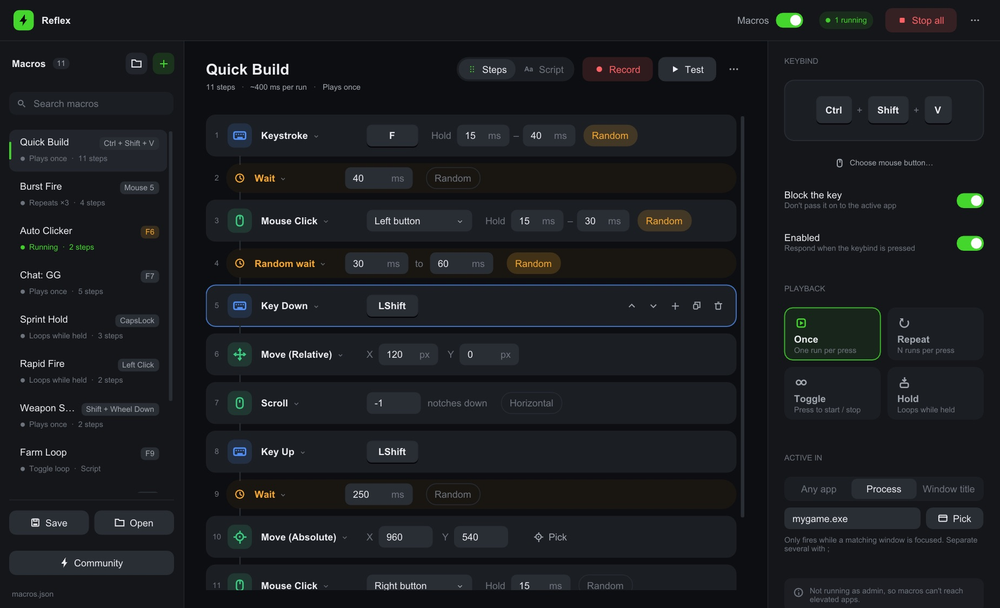
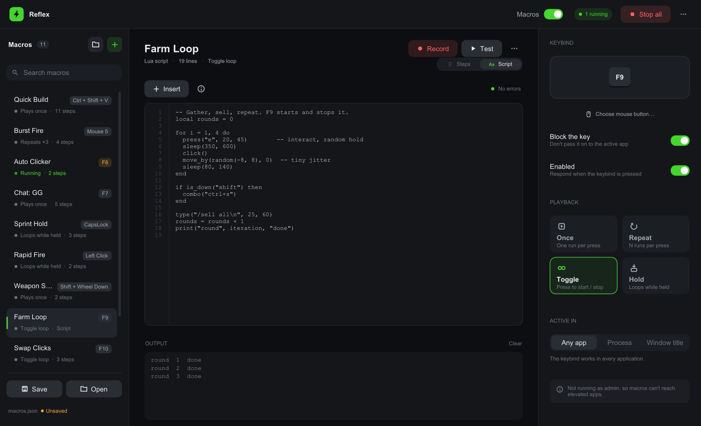
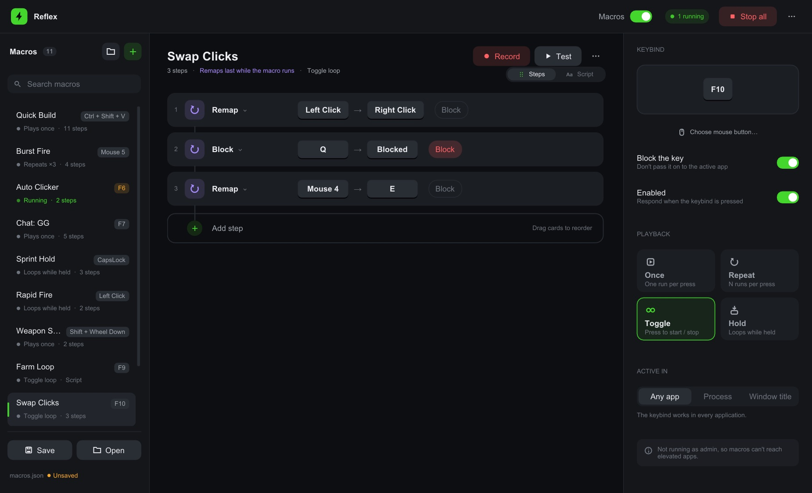
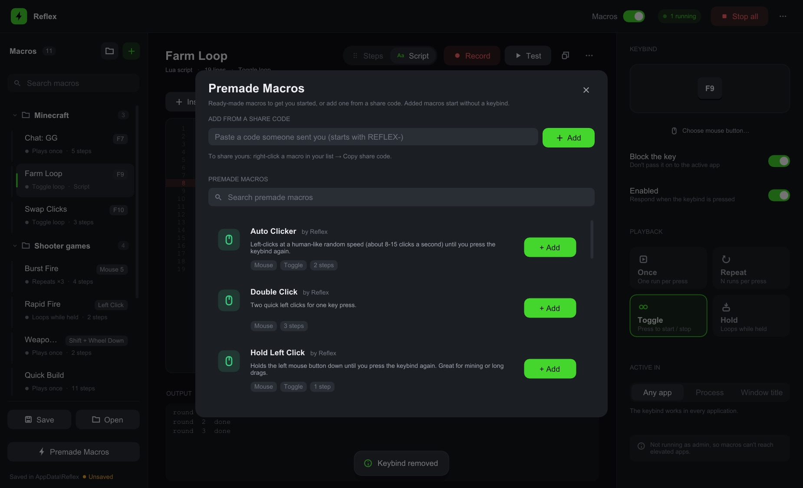

Reflex lets you build macros from simple steps or Lua scripts, bind them to any key, combo or mouse button, and remap inputs on the fly — all in a clean, modern app.
$5 one-time purchase · Windows 10 & 11 · Lifetime updates

Powerful enough for scripts, simple enough to set up in a minute.
Keystrokes, clicks, typing, mouse moves, scrolling and waits. Drag to reorder, no code needed.
Loops, conditions and randomness when you want full control, with live error checking.
Bind to keys, combos, all mouse buttons including side buttons, or the scroll wheel.
Turn left click into right click, Mouse 4 into a key, or disable keys — only while you want.
Random delays, hold times and typing speed, so repeated actions don't look robotic.
Hit record, do it once, and Reflex turns it into a macro you can tweak.
Organise dozens of macros into folders and arrange them however you like.
Start from ready-made macros, or share yours with a code your friends paste in.
Ctrl+Shift+F12 stops everything instantly and releases held keys. Macros can be limited to one app.
Switch any macro to a script and write it in Lua. Reflex highlights mistakes as you type and shows output while it runs.
press("e"), click(), type("gg"), sleep(50, 120)pressed() and is_down()
Add Remap and Block steps to a toggle macro and press its key to switch them on and off.

Auto clicker, auto walk, sprint lock, swap mouse buttons, typing helpers and more — add one, give it a key, done.

Add steps, record yourself, write a script, or start from a premade macro.
Any key, combo, mouse button or scroll direction. Choose once, toggle or hold.
Your macro runs anywhere — or only in the app you choose. Everything saves automatically.
No subscription. Buy once and keep getting updates.
One-time purchase on Ko-fi
You'll be taken to the Reflex Macros shop on Ko-fi.
A Windows 10 or 11 PC. Reflex is a single small app — nothing else to install.
No. You pay once and keep it, including future updates. Reflex tells you when a new version is out.
Yes. Your macros are saved on your PC separately from the app, so new versions pick them up automatically.
Reflex sends real keyboard and mouse input, so it works in most apps and games. For games that run as administrator, run Reflex as administrator too. Some online games don't allow macros — always check a game's rules before using them there.
Message us through the Reflex Macros page on Ko-fi.